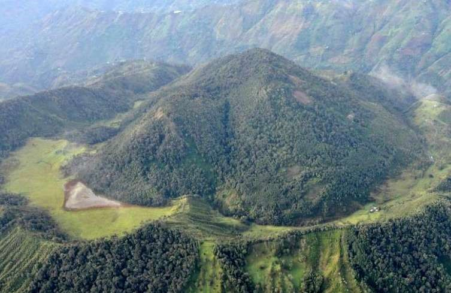
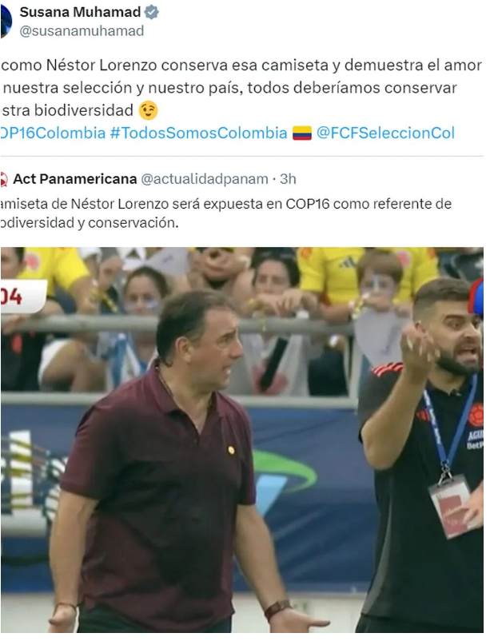

Stefany Cuadrado: sensacional, segundo oro en el Mundial juvenil de pista, esta vez en los 500 metros
La colombiana Stefany Cuadrado se impuso en la competencia de los 500 metros del Mundial de ciclismo de pista de China, su segundo oro tras obtener el primer puesto en la velocidad. El certamen se lleva a cabo en la ciudad de Louyang, donde Cuadrado se ha convertido en una de las estrellas mundialistas, fue oro con tiempo de 43.312 segundos.

Leer mas
Más de la mitad de actividades económicas en Colombia perdieron puestos de trabajo en julio
Según un informe reciente del Dane, más de la mitad de las ramas de la actividad económica en Colombia experimentaron pérdidas de puestos de trabajo en julio en comparación con el mismo mes del año anterior. De las 13 ramas de actividad, siete tuvieron una disminución en el número de trabajadores. El sector de la construcción fue el más afectado, con 119,000 empleos destruidos durante esos 12 meses. Además, áreas como transporte, almacenamiento, comercio y reparación de vehículos también sufrieron reducciones significativas. Sin embargo, el sector de administración pública, defensa, educación y atención de la salud humana experimentó un aumento de 164,000 empleos, lo cual está en línea con su contribución al crecimiento económico. A pesar de los desafíos, algunos sectores lograron recuperarse, como las industrias manufactureras, que registraron 67,000 empleos más que el año anterior. Estos datos reflejan la complejidad de la recuperación económica en medio de la pandemia.
Leer mas
El Cerro Machín, el volcán "pequeño pero picoso" que duerme en Colombia
Toche (Colombia), 6 sep (EFE).- "Pequeño pero picoso" es la definición que le otorga la geóloga Gloria Cortés al volcán Cerro Machín, una formación "atípica" ubicada en el centro de Colombia, donde predominan las cumbres nevadas de mayor altura. Este, en cambio, es un volcán bajito "pero altamente explosivo" y un reto para el país, que todavía recuerda la tragedia de Armero.

El Cerro Machín, un volcán ubicado en el centro de Colombia, ha llamado la atención de los geólogos. Aunque es considerado “pequeño”, su actividad es inusual y se monitorea de cerca. Gloria Cortés, geóloga, lo describe como “pocas veces visto” y destaca su potencial eruptivo.
Leer mas
La ministra de Ambiente Susana Muhamad cayó en noticia falsa de Actualidad Panamericana: “Ellos están mamando gallo”
La jefa del Ministerio de Ambiente compartió en redes sociales una publicación sarcástica sobre la camiseta de Néstor Lorenzo, director técnico de la selección Colombia. Su comentario buscaba concienciar sobre la conservación de la biodiversidad
La ministra de Ambiente y Desarrollo Sostenible de Colombia, Susana Muhamad, fue presa de una noticia publicada por Actualidad Panamericana, un grupo de periodistas que desde 2014 se ha convertido en el principal medio digital dedicado a la sátira en Colombia. En el reciente partido de eliminatorias que tuvo lugar en Barranquilla, la selección Colombia se impuso ante Argentina con un marcador de 2-1.
A través de la cuenta de X, el portal sátiro posteó una fotografía del director técnico del combinado tricolor, Néstor Lorenzo, luciendo su habitual camisa de color vino tinto, acompañada del texto: “Camiseta de Néstor Lorenzo será expuesta en COP16 como referente de biodiversidad y conservación”.
Cabe recordar que, en diferentes ocasiones el técnico ha sido objeto de críticas, pues hay quienes presumen que siempre usa la misma camisa para todos los encuentros deportivos del equipo cafetero; sin embargo, Néstor Lorenzo aclaró que tiene varias camisas del mismo color y que por supuesto las lava y las turna para vestirlas en los partidos.

Sin embargo, el post de Actualidad Panamericana, cargado de sarcasmo, fue tomado en serio por la ministra Muhamad, que lo compartió en su cuenta expresando: “Así como Néstor Lorenzo conserva esa camiseta y demuestra el amor por nuestra selección y nuestro país, todos deberíamos conservar nuestra biodiversidad”.
Leer mas